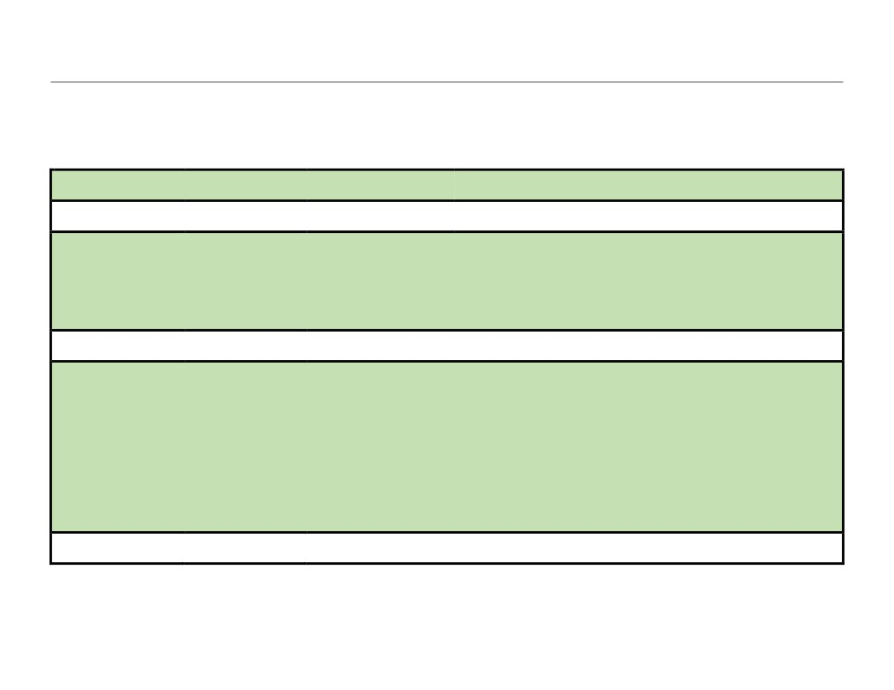
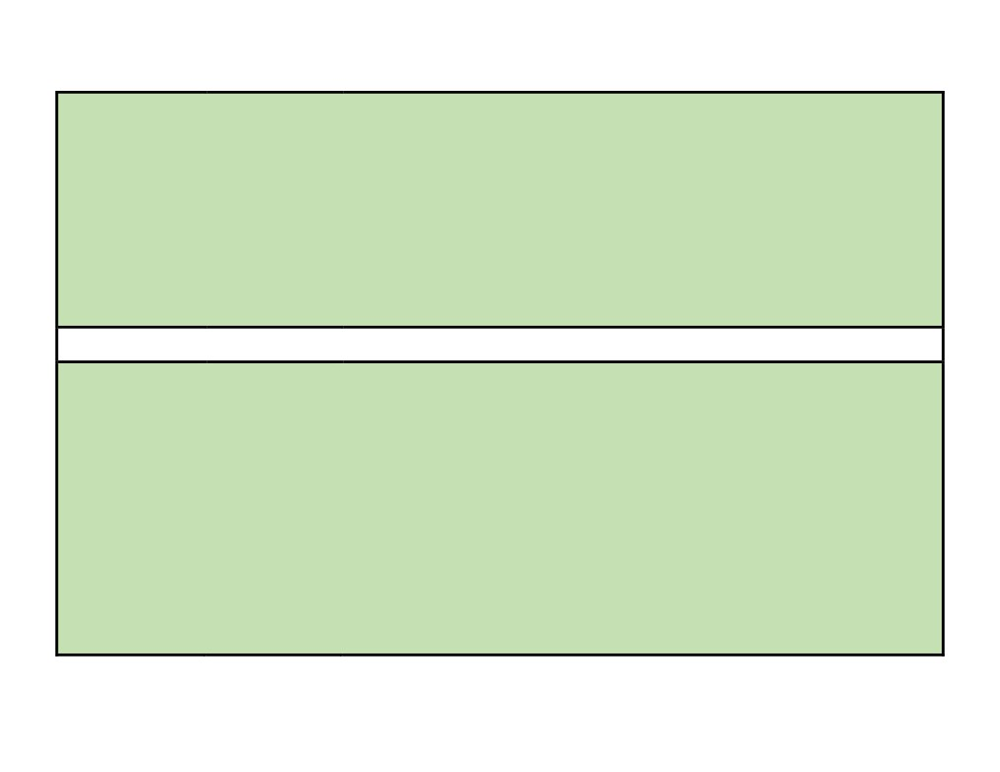
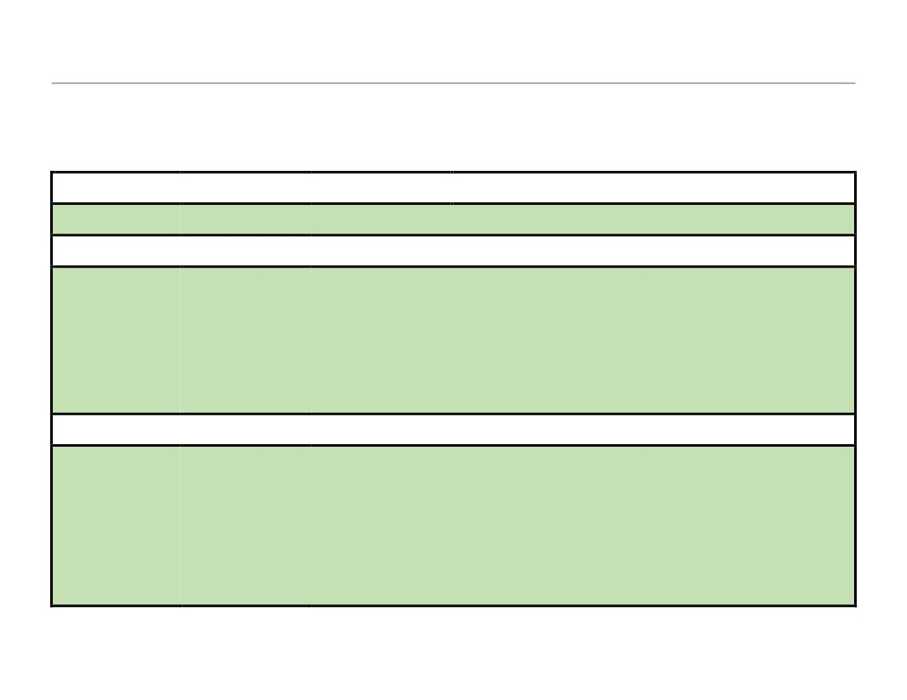
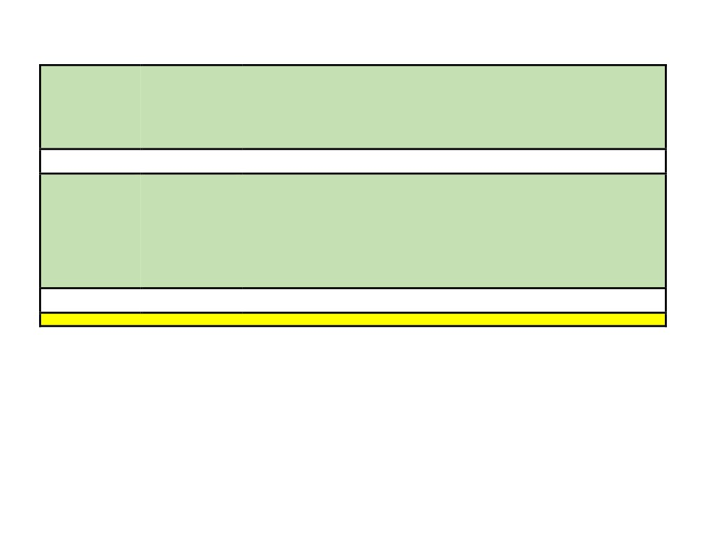

Tentative Program (pdf download)
IEEE ICII 2018 Program at a Glance
Time/Day
Sunday (Oct 21)
Monday (Oct 22)
Tuesday (Oct 23)
07:30 - 08:00
Breakfast
Breakfast
08:15 - 08:30
Opening
08:30 - 09:30
Keynote I
Keynote II
09:30 - 10:00
Coffee Break
Coffee Break
10:00 - 11:30
TS I: Applications
TS IV: Control Systems
11:30 - 13:00
Lunch
Lunch
Lunch
13:00 - 13:15
Opening
TS II: Scheduling and Frameworks
TS V: Data Processing and Analytics
Workshop
13:15 - 15:00
IoT/CPS Security
15:00 - 15:30
Coffee Break
Coffee Break
Coffee Break
TS III: Security and Platforms
15:30 - 17:00
Invited Presentations
(Short Papers)
17:00 - 17:15
Conclusion
Reception and Poster/Demo
17:15 - 20:00
IEEE ICII 2018 Technical Program
Sunday October 21 {Day 1}
11:30 am - 13:00 pm
Lunch
(Juniper)
13:00 pm - 13:15 pm
Opening
1. Glenn Fink (Pacific Northwest National Laboratory, USA)
(Larch)
13:15 pm - 15:00 pm
Workshop - IoT/CPS
1. IoT Cameras and DVRs as DDoS Reflectors: Pros and Cons from Hacker’s
Security
Perspective
Natalija Vlajic (York University, Canada)
(Larch)
2. Helping IT and OT Defenders Collaborate
Glenn Fink (Pacific Northwest National Laboratory USA); Yana Shulga (Columbia Basin
College, USA)
3. Cybersecurity Issues in Internet of Things and Countermeasures
Hoda Al Ghadeer (Embry-Riddle Aeronautical University, USA)
4. Challenges with Current Cyber Security in ICS
Animesh Pattanayak (Pacific Northwest National Laboratory, USA); Jess Smith (Pacific
Northwest National Laboratory, USA); Matthew Kirkland (Pacific Northwest National
Laboratory, USA)
--------------- End of The Day ---------------

Monday October 22 {Day 2}
07:30 am - 08:00 am
Breakfast (Foyer)
08:15 am - 08:30 am
Opening
(Auditorium/Maple)
08:30 am - 09:30 am
Keynote I
1.
Musings on the Industrial Internet
Dr. Vinton G. Cerf (Vice President and Chief Internet Evangelist, Google)
(Auditorium/Maple)
Session Chair
Chenyang Lu
(Washington University
in St. Louis, USA)
09:30 am - 10:00 am
Coffee Break
(Foyer)
10:00 am - 11:30 am
TS I: Applications
1.
(Invited Paper) Low-Power Wide-Area Wireless Networks for Industrial Sensing Applications
(Auditorium/Maple)
Philipp Sommer (ABB Corporate Research, Switzerland); Yannick Maret (ABB Corporate Research,
Switzerland); Dacfey Dzung (ABB Corporate Research, Switzerland)
Session Chair
2.
Indoor Multi-Sensory Self-Supervised Autonomous Mobile Robotic Navigation
Abusayeedv Saifullah
Junhong Xu (Ball State Univesity, USA); Hanqing Guo (Ball State Univesity, USA); Saeed Alqarni (Ball
(Wayne State
State Univesity, USA); Shaoen Wu (Ball State Univesity, USA)
University, USA)
3.
TagLeak: Non-intrusive and Battery-free Liquid Leakage Detection with Backscattered Signals
Junchen Guo (Tsinghua University, P.R. China); Ting Wang (Tsinghua University, P.R. China); Meng Jin
(Northwest University, P.R. China); Songzhen Yang (Tsinghua University, P.R. China); Chengkun Jiang
(Tsinghua University, P.R. China); Long Liu (Tsinghua University, P.R. China); Yuan He (Tsinghua
University, P.R. China)
11:30 am - 13:00 pm
Lunch Break
(Foyer)
13:00 pm - 15:00 pm
TS II: Data
1.
(Invited Paper) On the Impact of WiFi on 2.4 GHz Industrial IoT Networks
Processing and
Fabian Rincon Vija (Inria Paris, France); Yasuyuki Tanaka (Inria Paris, France); Thomas Watteyne (Inria
Paris, France)
Analytics

(Auditorium/Maple)
2.
RT-DAP: A Real-Time Data Analytics Platform for Large-scale Industrial Process Monitoring and
Control
Song Han (University of Connecticut, USA); Tao Gong (University of Connecticut, USA); Mark Nixon
Session Chair
(Emerson Automation Solutions, USA); Eric Rotvold (Emerson Automation Solutions, USA); Kam-Yiu
Kim-Kwang Raymond
Lam (City University of Hong Kong, Hong Kong); Krithi Ramamritham (IIT Bombay, India)
Choo (University of
3.
An Energy-image based Multi-unit Power Load Forecasting System
Texas at San Antonio,
Chengpei Tang (Sun Yat-sen University, P.R. China); Shanqing Wang (Sun Yat-sen University, P.R.
USA)
China); Chancheng Zhou (Sun Yat-sen University, P.R. China); Xiaolong Zheng (Tsinghua University,
P.R. China)
4.
Integrated Analytics for IIoT Predictive Maintenance using IoT Big Data Cloud Systems
Hong-Linh Truong (Vienna University of Technology, Austria)
15:00 pm - 15:30 pm
Coffee Break
(Foyer)
15:30 pm - 17:00 pm
TS III: Security and
1.
(short paper) A New Efficient Scheme for Securely Growing WBAN Nodes
Platforms
Zhouzhou Li (University of Massachusetts Dartmouth, USA); Hua Fang (University of Massachusetts
Dartmouth, USA); Honggang Wang(University of Massachusetts Dartmouth, USA); Mahmoud
(Auditorium/Maple)
Daneshmand (Stevens Institute of Technology, USA)
Session Chair
2.
(short paper) Synergistic Security for the Industrial Internet of Things: Integrating Redundancy,
Glenn Fink
Diversity, and Hardening
(Northwest National
Aron Laszka (University of Houston, USA); Waseem Abbas (Information Technology University,
Laboratory, USA)
Pakistan); Yevgeniy Vorobeychik (Vanderbilt University, USA); Xenofon Koutsoukos (Vanderbilt
University, USA)
3.
(short paper) Towards Automation of Vulnerability and Exploitation Identification in IIoT Networks
Nour Moustafa (University of New South Wales at ADFA, Australia); Benjamin Turnbull (University of
New South Wales at ADFA, Australia); Kim-Kwang Raymond Choo (The University of Texas at San
Antonio, USA)
4.
(short paper) Brightics-IoT: Towards Effective Industrial IoT Platforms for Connected Smart
Factories
Hyokeun Choi (Samsung SDS, South Korea); Jaeseung Song (Department of Computer and Information
Security Sejong University, South Korea); Kyuyull Yi (Samsung SDS, South Korea)
17:00 pm - 20:00 pm
Reception and
1.
(Poster) QoS-Aware IIoT Microservices Architecture
Poster/Demo
Eyhab Al-Masri (University of Washington Tacoma, USA)
(Eques)
2.
(Poster) A Focused Crawler Model Based on Mutation Improving Particle Swarm Optimization
Algorithm
Guangxia Xu, Peng Jiang, Chuang Ma and Mahmoud Daneshmand
3.
(Poster) 4G Network for Air-Ground Data Transmission: A Drone based Experiment
Liqi Chen (Xi'an Jiaotong-Liverpool University, China); Zheng Huang (Xi'an Jiaotong-Liverpool
University, China); Zhenbang Liu (Xi'an Jiaotong-Liverpool University, China); Dawei Liu (Xi'an
Jiaotong-Liverpool University, China); Xin Huang (Xi'an Jiaotong-Liverpool University, China)
4.
(Poster) A Reconfigurable SoC for Softcast Wireless Video Transmission
Fengxiang Gao (Tongji University, China); Haoqi Ren (Tongji University, China); Jun Wu (Tongji
University, China)
5.
(Poster) A Serverless IoT Architecture for Smart Waste Management Systems
Eyhab Al-Masri (University of Washington Tacoma, USA); Ibrahim Diabate (University of Washington
Tacoma, USA); Richa Jain (University of Washington Tacoma, USA); Ming Hoi Lam (University of
Washington Tacoma, USA); Swetha Reddy Nathala (University of Washington Tacoma, USA)
6.
(Demo) IoT Based Positioning Service Platform Soumya Kanti Datta (EURECOM, France); Jerome
Haerri (EURECOM, France); Christian Bonnet (EURECOM, France)
7.
(Demo) Brightics-IoT: Key Attractive Features of Enterprise Targeted IoT Platform
Hyokeun Choi (Samsung SDS, South Korea)
8.
(Demo) Blockchain Enabled Internet-of-Things Service Platform for Industrial Domain
Chanhyung Lee (Sejong University, South Korea); Nakmyoung Sung (Korean Electronics Technology
Institute, South Korea); Lewis Nkenyereye (Sejong University, South Korea); Jaeseung Song (Sejong
University, South Korea)
--------------- End of The Day ---------------

Tuesday October 23 {Day 3}
07:30 am - 08:30 am
Breakfast (Foyer)
08:30 am - 09:30 am
Keynote II
1.
What if We Reimagine a New Internet?
(Auditorium/Maple)
Dr. Renwei Li (Chief Scientist and Vice President of the Future Networks, Huawei)
09:30 am - 10:00 am
Coffee Break (Foyer)
10:00 am - 11:30 am
TS IV: Control
1.
(Invited paper) Deterministic Timing for the Industrial Internet of Things
Systems
Chadlia Jerad (University of Manouba, Tunisia); Edward A. Lee (UC Berkeley, USA)
(Auditorium/Maple)
2.
A Flexible Retransmission Policy for Industrial Wireless Sensor Actuator Networks
Ryan Brummet (University of Iowa, USA); Dolvara Gunatilaka (Washington University in St. Louis,
Session Chair
USA); Dhruv Vyas (University of Iowa, USA); Octav Chipara (University of Iowa, USA); Chenyang Lu
Xenofon Koutsoukos
(Washington University in St. Louis, USA)
(Vanderbilt University,
USA)
3.
Efficient Holistic Control over Industrial Wireless Sensor-Actuator Networks
Yehan Ma (Washington University in St. Louis, USA); Chenyang Lu (Washington University in St. Louis,
USA)
11:30 am - 13:00 pm
Lunch Break
(Foyer)
13:00 pm - 15:00 pm
TS V: Scheduling
1.
(Invited Paper) A Modular and Adaptive Architecture for Building Applications with Connected
and Frameworks
Devices
Pat Pannuto (UC Berkeley, USA); Prabal Dutta (UC Berkeley, USA); Wenpeng Wang (University of
(Auditorium/Maple)
Virginia, USA); Bradford Campbell (University of Virginia, USA)
Session Chair
2.
An Edge Computing Framework for Real-Time Monitoring in Smart Grid
Octav Chipara
Yutao Huang (Simon Fraser University, Canada); Yuhe Lu (Simon Fraser University, Canada); Feng
(University of Iowa,
Wang (The University of Mississippi, USA); Xiaoyi Fan (The University of British Columbia, Canada);
USA)
Jiangchuan Liu (Simon Fraser University, Canada); Victor Leung (The University of British Columbia,
Canada)
3.
A Utilization Based Approach for Schedulability Analysis in Wireless Control Systems

Venkata Prashant Modekurthy (Wayne State University, USA); Dali Ismail (Wayne State University,
USA); Mahbubur Rahman (Wayne State University, USA); Abusayeed Saifullah (Wayne State University,
USA)
4.
Unified Scheduling for Predictable Communication Reliability in Industrial Cellular Networks
Yuwei Xie (Iowa State University, USA); Hongwei Zhang (Iowa State University, USA); Pengfei Ren
(Wayne State University, USA)
15:00 pm - 15:30 pm
Coffee Break
(Foyer)
15:30pm - 17:00 pm
Distinguished
1.
Get Stuck in Big Data? High-throughput Data Processing Based on GPU Computing
Industry Session
Hanyu Jiang (Philips, USA)
(Auditorium/Maple)
2.
Application behaviors Driven Self-Organizing Network for 4G LTE networks
Zhongyuan (Thomas) Li (Verizon Wireless, USA)
Session Chair
Philipp Sommer
3.
Bridging Machine Learning and Controls for Smart Buildings
(ABB, Switzerland)
Achin Jain (Flexergy.AI, USA)
4.
Big Data System Quality Measurement
Libin Shen (Splunk, USA)
17:00 pm - 17:15 pm
Conclusion
(Auditorium/Maple)
--------------- End of The Day ---------------